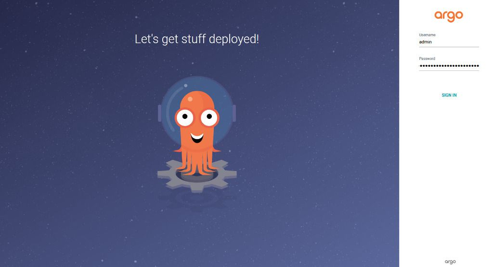
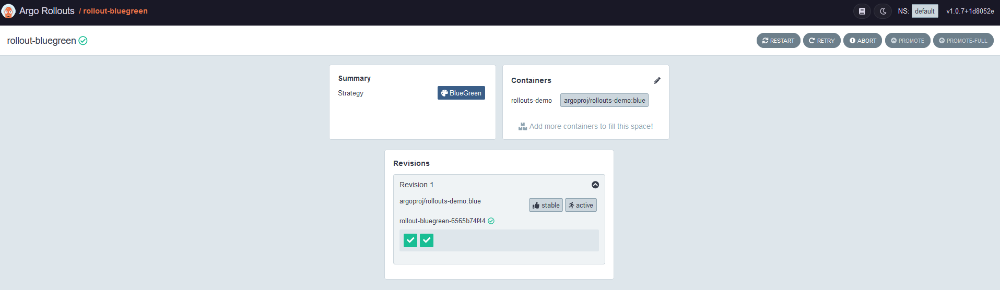
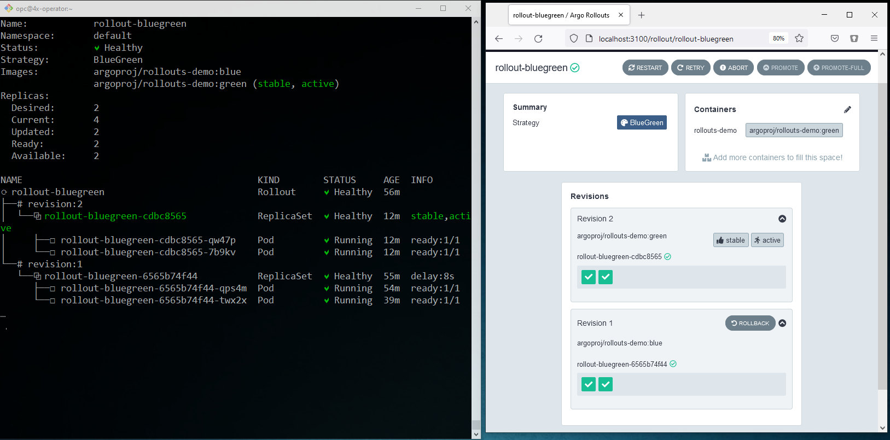

<div class="initial-content">
  <div id="main" role="main">

  <article class="page has-sidebar" itemscope itemtype="https://schema.org/CreativeWork">
    <meta itemprop="headline" content="Deploying the Argo CD on Oracle Container Engine for Kubernetes (OKE)">
    
    <meta itemprop="datePublished" content="2021-09-22T15:30:00+00:00">
    


    <header>
      <h1 id="page-title" class="page__title" itemprop="headline">Deploying the Argo CD on Oracle Container Engine for Kubernetes (OKE)
</h1>
      


    </header>

    <section class="page__content" itemprop="text">
      

        <picture class="alignright">
                <source srcset="assets/argo-icon-color-800.png 1x" />
                
            </picture>

<p>In early 2020, the <a href="https://argoproj.github.io/">Argo Project</a> was <a href="https://www.cncf.io/blog/2020/04/07/toc-welcomes-argo-into-the-cncf-incubator/">accepted as an incubator-level</a> project in CNCF’s stack and comprises a set of Kubernetes-native tools for running and managing jobs and applications on Kubernetes.</p>

<p>As a brief introduction, the Argo Project has 4 main components:</p>

<ul>
  <li></li>
  <li></li>
  <li></li>
  <li></li>
</ul>

<h2 id="prerequisites">Prerequisites</h2>

<p>In order to successfully complete this tutorial, you’ll need:</p>

<ul>
  <li>A MacOS, Linux, or Windows computer with <code class="language-plaintext highlighter-rouge">ssh</code> support installed.</li>
  <li>The <code class="language-plaintext highlighter-rouge">kubectl</code> command-line tool.</li>
  <li>A <code class="language-plaintext highlighter-rouge">kubeconfig</code> file (default location is ~/.kube/config).</li>
</ul>

<h2 id="getting-started">Getting started</h2>

<p>In this tutorial, we’ll cover how to:</p>

<ul>
  <li>Create a test OKE cluster for Argo</li>
  <li>Install Argo CD</li>
  <li>Connect to the Argo CD API Server</li>
  <li>Deploy applications using the Argo CD UI</li>
  <li>Deploy Argo Rollouts</li>
</ul>

<p>So, without wasting any time, let’s take Argo CD for a spin!</p>

<h2 id="creating-a-test-oke-cluster-for-argo">Creating a test OKE cluster for Argo</h2>

<ol>
  <li>Clone the <a href="https://github.com/oracle-terraform-modules/terraform-oci-oke/blob/master/docs/quickstart.adoc#provisioning-using-this-git-repo">terraform-oci-oke repo</a> or <a href="https://github.com/oracle-terraform-modules/terraform-oci-oke/blob/master/docs/quickstart.adoc#provisioning-using-the-hashicorp-registry-module">use the published terraform OKE module</a> on the <a href="https://registry.terraform.io/modules/oracle-terraform-modules/oke/oci/latest">Terraform registry</a> to create an OKE Cluster.
    <blockquote>
      <p><strong>NOTE:</strong> You can also use <a href="https://docs.cloud.oracle.com/en-us/iaas/Content/ContEng/Tasks/contengcreatingclusterusingokehtm#create-quick-cluster">the Quick Create</a> feature to create your cluster if you don’t want to use Terraform.</p>
    </blockquote>
  </li>
  <li>
    <p>Ensure you use the following parameters in your <code class="language-plaintext highlighter-rouge">terraform.tfvars</code>:</p>

    <div class="language-tf highlighter-rouge"><div class="highlight"><pre class="highlight"><code>   <span class="nx">label_prefix</span> <span class="err">=</span> <span class="s2">"argo"</span>
   <span class="nx">region</span> <span class="err">=</span> <span class="s2">"us-phoenix-1"</span>

   <span class="nx">vcn_dns_label</span> <span class="err">=</span> <span class="s2">"oke"</span>
   <span class="nx">vcn_name</span> <span class="err">=</span> <span class="s2">"oke"</span>

   <span class="nx">create_bastion_host</span> <span class="err">=</span> <span class="kc">true</span>

   <span class="nx">create_operator</span>              <span class="err">=</span> <span class="kc">true</span>
   <span class="nx">admin_instance_principal</span>     <span class="err">=</span> <span class="kc">true</span>
   <span class="nx">control_plane_type</span>           <span class="err">=</span> <span class="s2">"private"</span>

   <span class="nx">node_pools</span> <span class="err">=</span> <span class="p">{</span>
     <span class="nx">np1</span> <span class="p">=</span> <span class="p">{</span> <span class="nx">shape</span> <span class="p">=</span> <span class="s2">"VM.Standard.E4.Flex"</span><span class="p">,</span> <span class="nx">ocpus</span> <span class="p">=</span> <span class="mi">1</span><span class="p">,</span> <span class="nx">memory</span> <span class="p">=</span> <span class="mi">16</span><span class="p">,</span> <span class="nx">node_pool_size</span> <span class="p">=</span> <span class="mi">2</span><span class="p">,</span> <span class="nx">boot_volume_size</span> <span class="p">=</span> <span class="mi">150</span> <span class="p">}</span>
   <span class="p">}</span>
</code></pre></div>    </div>
  </li>
  <li>
    <p>In the console, run:</p>

    <div class="language-console highlighter-rouge"><div class="highlight"><pre class="highlight"><code><span class="go">   terraform init  
   terraform apply -auto-approve
</span></code></pre></div>    </div>
  </li>
  <li>
    <p>Once Terraform has finished, ssh to the operator by copying the ssh command from the output. For example:</p>

    <div class="language-console highlighter-rouge"><div class="highlight"><pre class="highlight"><code><span class="go">   ssh -i ~/.ssh/id_rsa -J opc@XXX.XXX.XXX.XXX opc@10.0.1.10
</span></code></pre></div>    </div>
  </li>
</ol>

<h2 id="argo-cd">Argo CD</h2>

<p><a href="https://argoproj.github.io/cd">Argo CD</a> is a declarative, GitOps continuous delivery tool for Kubernetes. It allows:</p>

<ul>
  <li>Application definitions, configurations, and environments to be declarative and version controlled</li>
  <li>Application deployment and lifecycle management to be automated, auditable, and easy to understand</li>
</ul>

<p>In this section we’ll follow Argo CD’s <a href="https://argoproj.github.io/argo-rollouts/getting-started/">getting started guide</a>.</p>

<ol>
  <li>
    <p>Install Argo CD</p>

    <div class="language-console highlighter-rouge"><div class="highlight"><pre class="highlight"><code><span class="go">   kubectl create namespace argocd
   kubectl apply -n argocd -f https://raw.githubusercontent.com/argoproj/argo-cd/stable/manifests/install.yaml
</span></code></pre></div>    </div>
  </li>
  <li>
    <p>Download and install the Argo CD CLI:</p>

    <div class="language-console highlighter-rouge"><div class="highlight"><pre class="highlight"><code><span class="go">   curl -sLO https://github.com/argoproj/argo-cd/releases/download/v2.1.3/argocd-linux-amd64
   chmod +x argocd-linux-amd64
   sudo mv argocd-linux-amd64 /usr/local/bin/argocd
</span></code></pre></div>    </div>
  </li>
</ol>

<h3 id="access-the-argo-cd-api-server">Access the Argo CD API server</h3>

<h4 id="using-port-forwarding">Using port-forwarding</h4>

<ol>
  <li>
    <p>Establish an SSH tunnel to operator:</p>

    <div class="language-console highlighter-rouge"><div class="highlight"><pre class="highlight"><code><span class="gp">   ssh -L 8080:localhost:8080 -i ~/.ssh/id_rsa -J opc@&lt;bastion_public_ip&gt;</span><span class="w"> </span>opc@&lt;operator_private_ip&gt;
</code></pre></div>    </div>
  </li>
  <li>
    <p>Then we port-forward to the Argo CD service:</p>

    <div class="language-console highlighter-rouge"><div class="highlight"><pre class="highlight"><code><span class="go">   kubectl port-forward --address 0.0.0.0 svc/argocd-server -n argocd 8080:443
</span></code></pre></div>    </div>

    <p>We can now access the ArgoCD UI in our browser at <code class="language-plaintext highlighter-rouge">https://localhost:8080</code></p>
  </li>
</ol>

<h4 id="using-the-load-balancer">Using the Load Balancer</h4>

<p>Or, we can change the service type to Load Balancer and use the IP Address of the Load Balancer to access the UI:</p>

<div class="language-console highlighter-rouge"><div class="highlight"><pre class="highlight"><code><span class="go">kubectl patch svc argocd-server -n argocd -p '{"spec": {"type": "LoadBalancer"}}'
</span></code></pre></div></div>

<h3 id="argo-cd-login">Argo CD login</h3>

<p>Whichever way we use to connect to the Argo CD API server, we’ll be warned of a potential security risk. That’s because we didn’t install certificates and take other security precautions. However, we can still do that later by using <a href="https://letsencrypt.org/">Let’s Encrypt</a> and <a href="https://cert-manager.io/">cert-manager</a> and then use this together with an <a href="https://medium.com/oracledevs/experimenting-with-ingress-controllers-on-oracle-container-engine-oke-part-1-5af51e6cdb85">Ingress Controller</a> like the <a href="https://kubernetes.github.io/ingress-nginx/">NGINX Ingress Controller</a>. Make sure you read Argo’s <a href="https://argoproj.github.io/argo-cd/operator-manual/ingress/">documentation on using Ingress</a>.</p>

<ol>
  <li>
    <p><strong>Skip security warning for now:</strong> Since our goal is to get things set up and we know that we can postpone these tasks until later, we’ll just skip passed these warnings and select:<br />
<strong>Advanced &gt; Accept the Risk and Continue</strong></p>
  </li>
  <li>
    <p><strong>log in:</strong> The ArgoCD login page will appear and will require a password.<br />
Use the following to log in:</p>

    <ul>
      <li><strong>login:</strong> admin</li>
      <li><strong>password:</strong> <code class="language-plaintext highlighter-rouge">kubectl -n argocd get secret argocd-initial-admin-secret -o jsonpath="{.data.password}" | base64 -d</code><br />
Since the initial password is just saved as plain text in the <code class="language-plaintext highlighter-rouge">argocd-initial-admin-secret</code> secret, we can use this to retrieve the information we need.</li>
    </ul>

    <picture class="aligncenter">
             <source srcset="assets/argo-oke-login-1024.jpg 1x" />
             
         </picture>
  </li>
</ol>

<h3 id="creating-apps-via-the-ui">Creating apps via the UI</h3>

<p>Once you’re connected to the Argo CD API server, follow the rest of the instructions in <a href="https://argoproj.github.io/argo-cd/getting_started/#creating-apps-via-ui">creating apps via UI</a>.</p>

<h4 id="deploy-application">Deploy application</h4>

<p>Once the application is created, select <strong>Sync</strong> and watch the application being deployed as Kubernetes works its magic to create the various resources (deployment, service, ReplicaSet, pods, etc.).</p>

<picture class="aligncenter">
                <source srcset="assets/argo-oke-ui.png 1x" />
                
            </picture>

<h4 id="acquaint-yourself-with-the-ui">Acquaint yourself with the UI</h4>

<p>Once the application is deployed, take a moment to poke around the Argo UI and the Kubernetes resources.</p>

<p>While you’re taking the tour, there are definitely some destinations you should visit. Let’s take a quick look at one of them:</p>

<ol>
  <li>Select the <em>guestbook-ui</em> service and then select <strong>Edit</strong>.</li>
  <li>Change the service type from <em>ClusterIP</em> to <em>LoadBalancer</em> and then save.<br />
Once the OCI Load Balancer is provisioned, its public IP address appears. Awesome stuff! You can make a quick check on the OCI Console to verify.</li>
</ol>

<p>From here, you can experiment with other applications such as the <em>sock-shop</em> or using other tools such as <a href="https://helm.sh/">helm</a> or <a href="https://kustomize.io/">kustomize</a>. You can find more examples in this <a href="https://github.com/argoproj/argocd-example-apps">example apps repo</a>.</p>

<h2 id="argo-rollouts">Argo Rollouts</h2>

<p>Argo Rollouts provides additional deployment strategies such as <em>Blue-Green</em> and <em>Canary to Kubernetes</em>. In this section, we’ll dive right in and follow Rollouts’ <a href="https://argoproj.github.io/argo-rollouts/getting-started/">getting started guide</a> to do a Blue-Green deployment.</p>

<h3 id="deploy-blue-green">Deploy Blue-Green</h3>

<ol>
  <li>
    <p>To install Blue-Green, run:</p>

    <div class="language-console highlighter-rouge"><div class="highlight"><pre class="highlight"><code><span class="go">   kubectl create namespace argo-rollouts
   kubectl apply -n argo-rollouts -f https://github.com/argoproj/argo-rollouts/releases/latest/download/install.yaml
</span></code></pre></div>    </div>
  </li>
  <li>
    <p>Install the Argo Rollouts <em>kubectl</em> plugin by running the following commands:</p>

    <div class="language-console highlighter-rouge"><div class="highlight"><pre class="highlight"><code><span class="go">   curl -LO  https://github.com/argoproj/argo-rollouts/releases/download/v1.0.7/kubectl-argo-rollouts-linux-amd64

   chmod +x kubectl-argo-rollouts-linux-amd64

   sudo mv kubectl-argo-rollouts-linux-amd64 /usr/local/bin/kubectl-argo-rollouts
</span></code></pre></div>    </div>
  </li>
  <li>
    <p>To test the plugin:</p>

    <div class="language-console highlighter-rouge"><div class="highlight"><pre class="highlight"><code><span class="go">    kubectl argo rollouts version
</span></code></pre></div>    </div>
  </li>
</ol>

<h3 id="switch-from-kubernetes">Switch from Kubernetes</h3>

<p>Switching from the default Kubernetes <a href="https://argoproj.github.io/argo-rollouts/getting-started/#converting-deployment-to-rollout">Deployment to Rollout</a> is very easy:</p>

<ol>
  <li>Change the <code class="language-plaintext highlighter-rouge">apiVersion</code> from *<code class="language-plaintext highlighter-rouge">apps/v1*</code> to <em><code class="language-plaintext highlighter-rouge">argoproj.io/v1alpha1</code></em></li>
  <li>Change the <code class="language-plaintext highlighter-rouge">kind</code> from <em>Deployment</em> to <em>Rollout</em></li>
  <li>Add a <em>deployment strategy</em> to the Rollout object</li>
</ol>

<h3 id="deploy-a-rollout">Deploy a Rollout</h3>

<ol>
  <li>
    <p>Create a <code class="language-plaintext highlighter-rouge">bluegreen.yaml</code> file (copied from the Argo CD documentation and example) on the operator host:</p>

    <div class="language-yaml highlighter-rouge"><div class="highlight"><pre class="highlight"><code>   <span class="na">apiVersion</span><span class="pi">:</span> <span class="s">argoproj.io/v1alpha1</span>
   <span class="na">kind</span><span class="pi">:</span> <span class="s">Rollout</span>
   <span class="na">metadata</span><span class="pi">:</span>
     <span class="na">name</span><span class="pi">:</span> <span class="s">rollout-bluegreen</span>
   <span class="na">spec</span><span class="pi">:</span>
     <span class="na">replicas</span><span class="pi">:</span> <span class="m">2</span>
     <span class="na">revisionHistoryLimit</span><span class="pi">:</span> <span class="m">2</span>
     <span class="na">selector</span><span class="pi">:</span>
       <span class="na">matchLabels</span><span class="pi">:</span>
         <span class="na">app</span><span class="pi">:</span> <span class="s">rollout-bluegreen</span>
     <span class="na">template</span><span class="pi">:</span>
       <span class="na">metadata</span><span class="pi">:</span>
         <span class="na">labels</span><span class="pi">:</span>
           <span class="na">app</span><span class="pi">:</span> <span class="s">rollout-bluegreen</span>
       <span class="na">spec</span><span class="pi">:</span>
         <span class="na">containers</span><span class="pi">:</span>
         <span class="pi">-</span> <span class="na">name</span><span class="pi">:</span> <span class="s">rollouts-demo</span>
           <span class="na">image</span><span class="pi">:</span> <span class="s">argoproj/rollouts-demo:blue</span>
           <span class="na">imagePullPolicy</span><span class="pi">:</span> <span class="s">Always</span>
           <span class="na">ports</span><span class="pi">:</span>
           <span class="pi">-</span> <span class="na">containerPort</span><span class="pi">:</span> <span class="m">8080</span>
     <span class="na">strategy</span><span class="pi">:</span>
       <span class="na">blueGreen</span><span class="pi">:</span> 
         <span class="c1"># activeService specifies the service to update with the new template hash at time of promotion.</span>
         <span class="c1"># This field is mandatory for the blueGreen update strategy.</span>
         <span class="na">activeService</span><span class="pi">:</span> <span class="s">rollout-bluegreen-active</span>
         <span class="c1"># previewService specifies the service to update with the new template hash before promotion.</span>
         <span class="c1"># This allows the preview stack to be reachable without serving production traffic.</span>
         <span class="c1"># This field is optional.</span>
         <span class="na">previewService</span><span class="pi">:</span> <span class="s">rollout-bluegreen-preview</span>
         <span class="c1"># autoPromotionEnabled disables automated promotion of the new stack by pausing the rollout</span>
         <span class="c1"># immediately before the promotion. If omitted, the default behavior is to promote the new</span>
         <span class="c1"># stack as soon as the ReplicaSet are completely ready/available.</span>
         <span class="c1"># Rollouts can be resumed using: `kubectl argo rollouts promote ROLLOUT`</span>
         <span class="na">autoPromotionEnabled</span><span class="pi">:</span> <span class="no">false</span>
   <span class="s">---</span>
   <span class="na">kind</span><span class="pi">:</span> <span class="s">Service</span>
   <span class="na">apiVersion</span><span class="pi">:</span> <span class="s">v1</span>
   <span class="na">metadata</span><span class="pi">:</span>
     <span class="na">name</span><span class="pi">:</span> <span class="s">rollout-bluegreen-active</span>
   <span class="na">spec</span><span class="pi">:</span>
     <span class="na">type</span><span class="pi">:</span> <span class="s">LoadBalancer</span>
     <span class="na">selector</span><span class="pi">:</span>
       <span class="na">app</span><span class="pi">:</span> <span class="s">rollout-bluegreen</span>
     <span class="na">ports</span><span class="pi">:</span>
     <span class="pi">-</span> <span class="na">protocol</span><span class="pi">:</span> <span class="s">TCP</span>
       <span class="na">port</span><span class="pi">:</span> <span class="m">80</span>
       <span class="na">targetPort</span><span class="pi">:</span> <span class="m">8080</span>

   <span class="s">---</span>
   <span class="na">kind</span><span class="pi">:</span> <span class="s">Service</span>
   <span class="na">apiVersion</span><span class="pi">:</span> <span class="s">v1</span>
   <span class="na">metadata</span><span class="pi">:</span>
     <span class="na">name</span><span class="pi">:</span> <span class="s">rollout-bluegreen-preview</span>
   <span class="na">spec</span><span class="pi">:</span>
     <span class="na">type</span><span class="pi">:</span> <span class="s">LoadBalancer</span>
     <span class="na">selector</span><span class="pi">:</span>
       <span class="na">app</span><span class="pi">:</span> <span class="s">rollout-bluegreen</span>
     <span class="na">ports</span><span class="pi">:</span>
     <span class="pi">-</span> <span class="na">protocol</span><span class="pi">:</span> <span class="s">TCP</span>
       <span class="na">port</span><span class="pi">:</span> <span class="m">80</span>
       <span class="na">targetPort</span><span class="pi">:</span> <span class="m">8080</span>
</code></pre></div>    </div>
  </li>
  <li>
    <p>Deploy it:</p>

    <div class="language-console highlighter-rouge"><div class="highlight"><pre class="highlight"><code><span class="go">   kubectl apply -f bluegreen.yaml
</span></code></pre></div>    </div>
  </li>
</ol>

<h3 id="verify-deployment">Verify deployment</h3>

<ol>
  <li>
    <p>Verify that we have 2 pods created:</p>

    <div class="language-console highlighter-rouge"><div class="highlight"><pre class="highlight"><code><span class="go">   kubectl get pods 
</span></code></pre></div>    </div>
  </li>
  <li>
    <p>List the <code class="language-plaintext highlighter-rouge">ReplicaSet</code>:</p>

    <div class="language-console highlighter-rouge"><div class="highlight"><pre class="highlight"><code><span class="go">   NAME                                  DESIRED   CURRENT   READY   AGE   CONTAINERS       IMAGES                                       SELECTOR
   rollout-bluegreen-6565b74f44          1         1         1       83s   rollouts-demo    argoproj/rollouts-demo:blue                  app=rollout-bluegreen,rollouts-pod-template-hash=6565b74f44
</span></code></pre></div>    </div>

    <p>We can see that the image deployed is of the <code class="language-plaintext highlighter-rouge">blue</code> variety. Similarly, if get Argo Rollouts to print thing for us:</p>

    <div class="language-console highlighter-rouge"><div class="highlight"><pre class="highlight"><code><span class="go">   kubectl argo rollouts get rollout rollout-bluegreen -w
</span></code></pre></div>    </div>

    <p><strong>Sample output:</strong></p>

    <div class="language-console highlighter-rouge"><div class="highlight"><pre class="highlight"><code><span class="go">   Name:            rollout-bluegreen
   Namespace:       default
   Status:          ✔ Healthy
   Strategy:        BlueGreen
   Images:          argoproj/rollouts-demo:blue (stable, active)
   Replicas:
     Desired:       2
     Current:       2
     Updated:       2
     Ready:         2
     Available:     2

   NAME                                           KIND        STATUS     AGE    INFO
   ⟳ rollout-bluegreen                            Rollout     ✔ Healthy  21m
</span><span class="gp">   └──#</span><span class="w"> </span>revision:1
<span class="go">      └──⧉ rollout-bluegreen-6565b74f44           ReplicaSet  ✔ Healthy  20m    stable,active
         ├──□ rollout-bluegreen-6565b74f44-qps4m  Pod         ✔ Running  19m    ready:1/1
         └──□ rollout-bluegreen-6565b74f44-twx2x  Pod         ✔ Running  4m19s  ready:1/1
</span></code></pre></div>    </div>
  </li>
</ol>

<h3 id="dashboard">Dashboard</h3>

<p>We can also use the Argo Rollouts dashboard to visualize things.</p>

<blockquote class="notice">
  <p><strong>NOTE:</strong> If you’re logged in the operator host, exit and log in again:</p>

  <div class="language-console highlighter-rouge"><div class="highlight"><pre class="highlight"><code><span class="go">ssh -L 3100:localhost:3100 -i ~/.ssh/id_rsa -J opc@132.226.28.30 opc@10.0.0.14
</span></code></pre></div>  </div>

</blockquote>

<h4 id="access-the-dashboard">Access the dashboard</h4>

<ol>
  <li>
    <p>To start up the dashboard, run:</p>

    <div class="language-console highlighter-rouge"><div class="highlight"><pre class="highlight"><code><span class="go">   kubectl argo rollouts dashboard
</span></code></pre></div>    </div>
  </li>
  <li>
    <p>Use your browser to access the Rollout dashboards:</p>

    <picture class="alignright">
             <source srcset="assets/argo-oke-dashboard.png 1x" />
             
         </picture>
  </li>
</ol>

<h4 id="example---load-balancers">Example - load balancers</h4>

<p>Finally, since we deployed both services as <code class="language-plaintext highlighter-rouge">type=LoadBalancer</code>, we will have 2 Load Balancers.</p>

<ol>
  <li>
    <p><strong>Look up public IP addresses -</strong> You can look up their respective public IP addresses in the OCI console or use kubectl to look them up in the EXTERNAL-IP column when you run:</p>

    <div class="language-console highlighter-rouge"><div class="highlight"><pre class="highlight"><code><span class="go">   kubectl get svc 
</span></code></pre></div>    </div>
  </li>
  <li>
    <p>Use you browser to access them:</p>

    <picture class="aligncenter">
             <source srcset="assets/argo-oke-blue.png 1x" />
             
         </picture>

    <blockquote class="notice">
      <p><strong>NOTE:</strong> Both the active and preview will be blue.</p>
    </blockquote>
  </li>
</ol>

<p><strong>Quick test - upgrade from blue to green:</strong></p>

<ol>
  <li>
    <p><strong>Upgrade -</strong> Let’s now patch to upgrade from blue to green:</p>

    <div class="language-console highlighter-rouge"><div class="highlight"><pre class="highlight"><code><span class="go">   kubectl patch rollout rollout-bluegreen --type merge -p '{"spec": {"template": { "spec": { "containers": [{"name": "rollouts-demo","image": "argoproj/rollouts-demo:green"}]}}}}'
</span></code></pre></div>    </div>

    <p>And we can see effect immediately:</p>

    <picture class="aligncenter">
             <source srcset="assets/argo-oke-rollout-patch.png 1x" />
             
         </picture>
  </li>
  <li>
    <p><strong>Preview -</strong> If we access the preview for <em>active Load Balancers</em>, we’ll see the preview is green and active is still blue.</p>

    <picture class="aligncenter">
             <source srcset="assets/argo-oke-green.png 1x" />
             
         </picture>
  </li>
  <li>
    <p><strong>Promotion -</strong> Let’s give the rollout a promotion. We can use command line as thus:</p>

    <div class="language-console highlighter-rouge"><div class="highlight"><pre class="highlight"><code><span class="go">     kubectl promote rollout-bluegreen
</span></code></pre></div>    </div>

    <p>or if you have Argo Rollouts Dashboard still open, you can use that too.</p>

    <picture class="aligncenter">
             <source srcset="assets/argo-oke-promoted.png 1x" />
             
         </picture>

    <p>If we now access both load balancers, they’ll both show up as green. You can keep switching between them to simulate upgrading to newer versions of your application.</p>
  </li>
</ol>

<h2 id="whats-next">What’s next</h2>

<p>At this point, we’ll pause here and leave Argo Events for a future article. Hopefully this tutorial has shown you that if you were considering running the Argo project on your Kubernetes cluster, OKE will work quite nicely with it.</p>

<blockquote class="notice">
  <p><strong>NOTE:</strong> This article was originally included as part of the <a href="https://medium.com/oracledevs/deploying-the-argo-project-on-oke-ee96cabf8910">Oracle developers series</a> on April, 2020. It has been updated to focus on ArgoCD and Rollouts and also to reflect the changes in the terraform-oci-oke project.</p>
</blockquote>

<p>To explore more information about development with Oracle products:</p>

<ul>
  <li><a href="https://developer.oracle.com/">Oracle Developers Portal</a></li>
  <li><a href="https://www.oracle.com/cloud/">Oracle Cloud Infrastructure</a></li>
</ul>

<!--- Links -->


          <div class="sidebar sticky">
    <!-- <p><strong>Tags:</strong> <span class="tags">

            
            <a class="animated-link tag" href="/topics/open-source">open-source</a>
            <a class="animated-link tag" href="/topics/oke">oke</a>
            <a class="animated-link tag" href="/topics/kubernetes">kubernetes</a>
            <a class="animated-link tag" href="/topics/terraform">terraform</a>
            <a class="animated-link tag" href="/topics/devops">devops</a>
            </span>
    </p> -->
  


<div itemscope itemtype="https://schema.org/Person">

  

  <div class="author__content">
    
      <a href="https:/lmukadam.medium.com"><h3 class="author__name" itemprop="name">Ali Mukadam</h3></a>
    
    
      <div class="author__bio" itemprop="description">
        <p>Technical Director, Asia Pacific Center of Excellence.</p>

<p>For the past 16 years, Ali has held technical presales, architect and industry consulting roles in BEA Systems and Oracle across Asia Pacific, focusing on middleware and application development. Although he pretends to be Thor, his real areas of expertise are Application Development, Integration, SOA (Service Oriented Architecture) and BPM (Business Process Management). An early and worthy Docker and Kubernetes adopter, Ali also leads a few open source projects (namely <a href="https://github.com/oracle-terraform-modules/terraform-oci-oke">terraform-oci-oke</a>) aimed at facilitating the adoption of Kubernetes and other cloud native technologies on Oracle Cloud Infrastructure.</p>

      </div>
    
  </div>

  <div class="author__urls-wrapper">
    <ul class="author__urls social-icons">
      

      

      

      

      

      

      

      
        <li>
          <a href="https://www.linkedin.com/in/https://www.linkedin.com/in/alimukadam/" itemprop="sameAs" rel="nofollow noopener noreferrer">
            <i class="fab fa-fw fa-linkedin" aria-hidden="true"></i><span class="label">LinkedIn</span>
          </a>
        </li>
      

      

      

      

      

      

      

      

      

      

      

      

      

      

      

      

      

      

      

      
    </ul>
  </div>
</div>

  
  
  

  </div>


      </section>

      <footer class="page__meta">
        
        


        

  <p class="page__date"><strong><i class="fas fa-fw fa-calendar-alt" aria-hidden="true"></i> Updated:</strong> <time datetime="2021-09-22T15:30:00+00:00">September 22, 2021</time></p>


      </footer>
    </div>

  </article>
</div>

</div>

